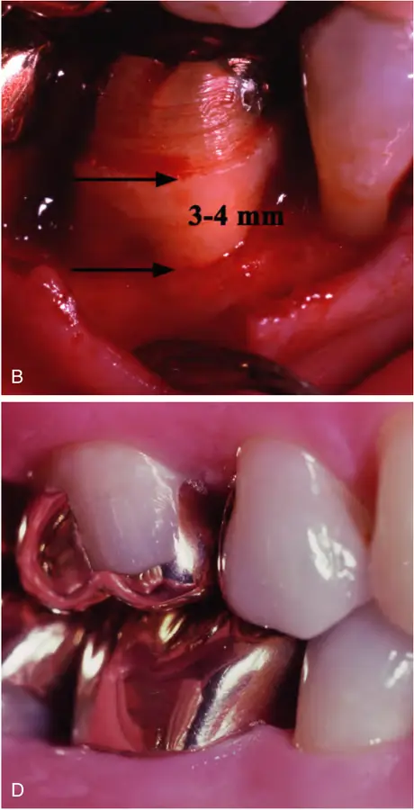
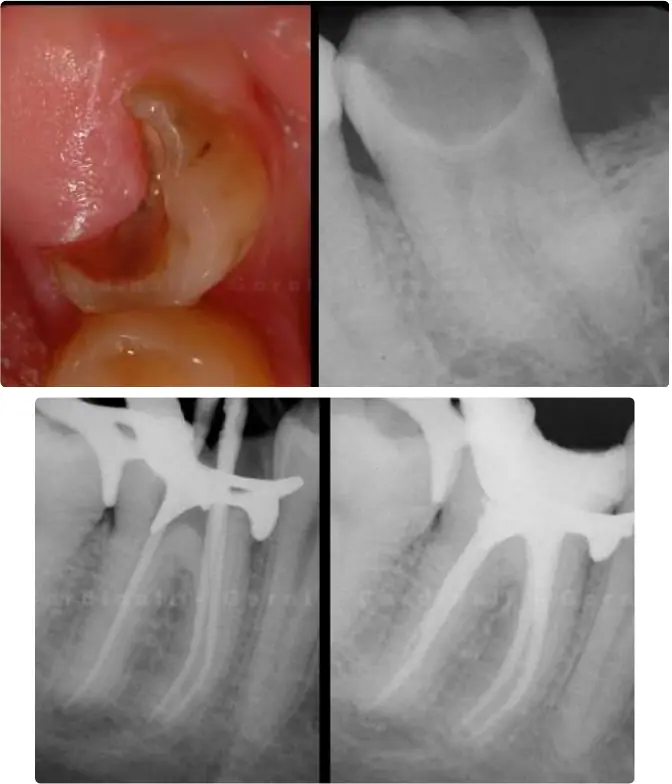

نسخه استخراجشده؛ ترجمه یا تأیید علمی انجام نشده است. وضعیت: captured
مولر اول پایین پوسیدگی دیستال عمیقی دارد. پس از برداشتن پوسیدگی، رادیوگرافی نشان میدهد لبهی دیستال حفره تا کرست استخوان رسیده است. کلمپ پرشیب هم در دیستال چیزی برای گرفتن پیدا نمیکند. قدم بعدی چیست؟

کلمپ پرشیب وقتی جواب میدهد که ساختار تا زیر لثه از دست رفته ولی بالای کرست استخوان به اندازهی کافی مانده باشد. وقتی لبهی ضایعه به کرست رسیده، درمان جراحی لازم است.
هدف این است که پس از جراحی، کلمپ روی ساختار سالم کافی بنشیند و ترمیم نهایی هم لبهای داشته باشد که به عرض بیولوژیک تجاوز نکند.
دو دیدگاه رایج:

گاهی لثهی اضافه روی دندان را پوشانده و کلمپ به بافت سخت نمیرسد. برداشتن لثهی اضافه، مثلاً با الکتروسرجری، بافت سخت را برای کلمپ نمایان میکند. پس از آن ورق معمولاً خوب دور دندان نمینشیند و درز را با لیکوئید دم میبندی.
اگر ایزولاسیون مناسب به دست نیامد، بیمار را به متخصص درمان ریشه ارجاع بده.
نکتهی طلایی: وقتی ساختار برای کلمپ کافی نیست، کلمپ پرشیب، بازسازی، افزایش طول تاج و ارجاع همه پذیرفتنیاند. تنها گزینهای که پذیرفتنی نیست، کار بدون رابردم است.